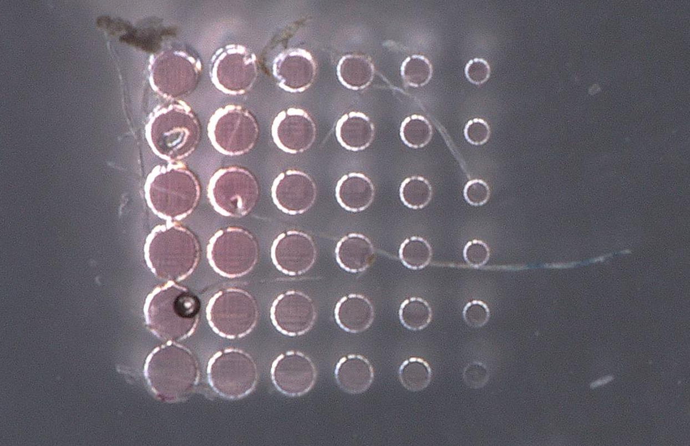

UMass Amherst / B.S. Mechanical Engineering · Expected May 2027
Ariyeh
Weissman-BennettMechanical engineering.
From model to prototype.
I’m Ariyeh Weissman-Bennett, a fourth-year Mechanical Engineering student working across electromechanical systems, mechanical design, and microfabrication research.

01 / Selected work
Design, analysis,
and engineering research.
From vibration signals to printed structures and responsive materials.
MATLABMotor modeling · Vibration · Machine learning
Electric Motor Fault Detection
Combining Simulink motor modeling, MATLAB vibration analysis, and machine learning to investigate motor faults.
3D-Printed Wing Design
Comparing spar locations to balance stiffness, stress, and mass in a printed semi-wing.

Lightweight Aluminum Wrench
Designing, analyzing, machining, and testing an aluminum wrench under geometric and weight constraints.

Microfluidics & hydrogel research
Explore my work on microfluidic fuel cells and pNIPAM hydrogel microactuators.
02 / Technical skills
Tools I put to work.
Design & analysis
SOLIDWORKS · CAD · Ansys
Structural analysis · GD&T · DFMA
Modeling & computation
MATLAB · Simulink · Python
Signal processing · FFT · Machine learning
Fabrication & experiments
FDM & DLP 3D printing · Manual machining
Two-photon direct laser writing · Arduino
03 / Background
Hands-on work.
Analytical foundations.
At UMass Amherst, I serve as the Machine Learning & Code Lead for an electric motor fault-detection capstone. Alongside the MATLAB and machine-learning work, I participate in building and validating our Simulink motor model. I also conduct undergraduate research in the THEAM Lab.
My teaching assistant experience in Strength of Materials and Additive Manufacturing includes helping students with mechanical concepts, CAD preparation, slicing, and printer troubleshooting.
I’m interested in mechanical engineering, robotics, automation, electromechanical systems, and engineering research.
04 / Contact
Let’s talk engineering.
For engineering opportunities, project discussions, and collaboration.